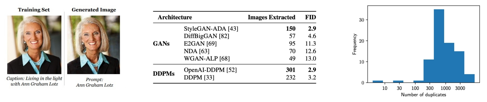

P73
Outline
- Safety and limitations of diffusion models
P74
Data Memorization in Diffusion Models
- Due to the likelihood-base objective function, diffusion models can ”memorize” data.
- And with a higher chance than GANs!
- Nevertheless, a lot of “memorized images” are highly-duplicated in the dataset.

Carlini et al., "Extracting Training Data from Diffusion Models", arXiv 2023
P75
Erasing Concepts in Diffusion Models
- Fine-tune a model to remove unwanted concepts.
- From original model, obtain score via negative CFG.
- A new model is fine-tuned from the new score function.


Gandikota et al., "Erasing Concepts from Diffusion Models", arXiv 2023
✅ 考虑到版权等问题。
✅ finetune 已有的 text-2-image model．
✅ 使用 negative CFG 原有信息不会受到影响。
Reference
P77
Part I
Ho et al., "Denoising Diffusion Probabilistic Models", NeurIPS 2020
Kingma et al., "Variational Diffusion Models", arXiv 2021
Karras et al., "Elucidating the Design Space of Diffusion-Based Generative Models", NeurIPS 2022
Song et al., "Denoising Diffusion Implicit Models", ICLR 2021
Jolicoeur-Martineau et al., "Gotta Go Fast When Generating Data with Score-Based Models", arXiv 2021
Liu et al., "Pseudo Numerical Methods for Diffusion Models on Manifolds", ICLR 2022
Lu et al., "DPM-Solver: A Fast ODE Solver for Diffusion Probabilistic Model Sampling in Around 10 Steps", NeurIPS 2022
Lu et al., "DPM-Solver++: Fast Solver for Guided Sampling of Diffusion Probabilistic Models", NeurIPS 2022
Zhang and Chen, "Fast Sampling of Diffusion Models with Exponential Integrator", arXiv 2022
Zhang et al., "gDDIM: Generalized denoising diffusion implicit models", arXiv 2022
Zhao et al., "UniPC: A Unified Predictor-Corrector Framework for Fast Sampling of Diffusion Models", arXiv 2023
Shih et al., "Parallel Sampling of Diffusion Models", arxiv 2023
Chen et al., "A Geometric Perspective on Diffusion Models", arXiv 2023
Xiao et al., "Tackling the Generative Learning Trilemma with Denoising Diffusion GANs", arXiv 2021
Salimans and Ho, "Progressive Distillation for Fast Sampling of Diffusion Models", ICLR 2022
Meng et al., "On Distillation of Guided Diffusion Models", arXiv 2022
Dockhorn et al., "GENIE: Higher-Order Denoising Diffusion Solvers", NeurIPS 2022
Watson et al., "Learning Fast Samplers for Diffusion Models by Differentiating Through Sample Quality", ICLR 2022
Phung et al., "Wavelet Diffusion Models Are Fast and Scalable Image Generators", CVPR 2023
Dhariwal and Nichol, "Diffusion Models Beat GANs on Image Synthesis", arXiv 2021
Ho and Salimans, "Classifier-Free Diffusion Guidance", NeurIPS Workshop 2021
Automatic1111, "Negative Prompt", GitHub
Hong et al., "Improving Sample Quality of Diffusion Models Using Self-Attention Guidance", arXiv 2022
Saharia et al., "Image Super-Resolution via Iterative Refinement", arXiv 2021
Ho et al., "Cascaded Diffusion Models for High Fidelity Image Generation", JMLR 2021
Sinha et al., "D2C: Diffusion-Denoising Models for Few-shot Conditional Generation", NeurIPS 2021
Vahdat et al., "Score-based Generative Modeling in Latent Space", arXiv 2021
Daras et al., "Score-Guided Intermediate Layer Optimization: Fast Langevin Mixing for Inverse Problems", ICML 2022
P78
Part I (cont’d)
Bortoli et al., "Diffusion Schrödinger Bridge", NeurIPS 2021
Bortoli et al., "Riemannian Score-Based Generative Modelling", NeurIPS 2022
Neklyudov et al., "Action Matching: Learning Stochastic Dynamics from Samples", ICML 2023
Bansal et al., "Cold Diffusion: Inverting Arbitrary Image Transforms Without Noise", arXiv 2022
Daras et al., "Soft Diffusion: Score Matching for General Corruptions", TMLR 2023
Delbracio and Milanfar, "Inversion by Direct Iteration: An Alternative to Denoising Diffusion for Image Restoration", arXiv 2023
Luo et al., "Image Restoration with Mean-Reverting Stochastic Differential Equations", ICML 2023
P79
Part II
Jabri et al., "Scalable Adaptive Computation for Iterative Generation", arXiv 2022
Li et al., "Efficient Spatially Sparse Inference for Conditional GANs and Diffusion Models", NeurIPS 2022
Avrahami et al., "Blended Diffusion for Text-driven Editing of Natural Images", CVPR 2022
Sarukkai et al., "Collage Diffusion", arXiv 2023
Bar-Tal et al., "MultiDiffusion: Fusing Diffusion Paths for Controlled Image Generation", ICML 2023
Kumari et al., "Multi-Concept Customization of Text-to-Image Diffusion", CVPR 2023
Tewel et al., "Key-Locked Rank One Editing for Text-to-Image Personalization", SIGGRAPH 2023
Zhao et al., "A Recipe for Watermarking Diffusion Models", arXiv 2023
Hu et al., "LoRA: Low-Rank Adaptation of Large Language Models", ICLR 2022
Avrahami et al., "SpaText: Spatio-Textual Representation for Controllable Image Generation", CVPR 2023
Orgad et al., "Editing Implicit Assumptions in Text-to-Image Diffusion Models", arXiv 2023
Han et al., "SVDiff: Compact Parameter Space for Diffusion Fine-Tuning", arXiv 2023
Xie et al., "DiffFit: Unlocking Transferability of Large Diffusion Models via Simple Parameter-Efficient Fine-Tuning", arXiv 2023
Saharia et al., "Palette: Image-to-Image Diffusion Models", SIGGRAPH 2022
Whang et al., "Deblurring via Stochastic Refinement", CVPR 2022
Xu et al., "Open-Vocabulary Panoptic Segmentation with Text-to-Image Diffusion Models", arXiv 2023
Saxena et al., "Monocular Depth Estimation using Diffusion Models", arXiv 2023
Li et al., "Your Diffusion Model is Secretly a Zero-Shot Classifier", arXiv 2023
Gowal et al., "Improving Robustness using Generated Data", NeurIPS 2021
Wang et al., "Better Diffusion Models Further Improve Adversarial Training", ICML 2023
P81
Part III
Jalal et al., "Robust Compressed Sensing MRI with Deep Generative Priors", NeurIPS 2021
Song et al., "Solving Inverse Problems in Medical Imaging with Score-Based Generative Models", ICLR 2022
Kawar et al., "Denoising Diffusion Restoration Models", NeurIPS 2022
Chung et al., "Improving Diffusion Models for Inverse Problems using Manifold Constraints", NeurIPS 2022
Ryu and Ye, "Pyramidal Denoising Diffusion Probabilistic Models", arXiv 2022
Chung et al., "Diffusion Posterior Sampling for General Noisy Inverse Problems", arXiv 2022
Feng et al., "Score-Based Diffusion Models as Principled Priors for Inverse Imaging", arXiv 2023
Song et al., "Pseudoinverse-Guided Diffusion Models for Inverse Problems", ICLR 2023
Mardani et al., "A Variational Perspective on Solving Inverse Problems with Diffusion Models", arXiv 2023
Delbracio and Milanfar, "Inversion by Direct Iteration: An Alternative to Denoising Diffusion for Image Restoration", arxiv 2023
Stevens et al., "Removing Structured Noise with Diffusion Models", arxiv 2023
Wang et al., "Zero-Shot Image Restoration Using Denoising Diffusion Null-Space Model", ICLR 2023
Zhou et al., "3D Shape Generation and Completion through Point-Voxel Diffusion", ICCV 2021
Zeng et al., "LION: Latent Point Diffusion Models for 3D Shape Generation", NeurIPS 2022
Nichol et al., "Point-E: A System for Generating 3D Point Clouds from Complex Prompts", arXiv 2022
Chou et al., "DiffusionSDF: Conditional Generative Modeling of Signed Distance Functions", arXiv 2022
Cheng et al., "SDFusion: Multimodal 3D Shape Completion, Reconstruction, and Generation", arXiv 2022
Hui et al., "Neural Wavelet-domain Diffusion for 3D Shape Generation", arXiv 2022
Shue et al., "3D Neural Field Generation using Triplane Diffusion", arXiv 2022
Yang et al., "Learning a Diffusion Prior for NeRFs", ICLR Workshop 2023
Jun and Nichol, "Shap-E: Generating Conditional 3D Implicit Functions", arXiv 2023
Metzer et al., "Latent-NeRF for Shape-Guided Generation of 3D Shapes and Textures", arXiv 2022
Hong et al., "Debiasing Scores and Prompts of 2D Diffusion for Robust Text-to-3D Generation", CVPR Workshop 2023
Watson et al., "Novel View Synthesis with Diffusion Models", arXiv 2022
Chan et al., "Generative Novel View Synthesis with 3D-Aware Diffusion Models", arXiv 2023
Zhou and Tulsiani, "SparseFusion: Distilling View-conditioned Diffusion for 3D Reconstruction", arXiv 2022
P82
Part III (cont’d)
Seo et al., "DITTO-NeRF: Diffusion-based Iterative Text To Omni-directional 3D Model", arXiv 2023
Haque et al., "Instruct-NeRF2NeRF: Editing 3D Scenes with Instructions", arXiv 2023
Sella et al., "Vox-E: Text-guided Voxel Editing of 3D Objects", arXiv 2023
Harvey et al., "Flexible Diffusion Modeling of Long Videos", arXiv 2022
Voleti et al., "MCVD: Masked Conditional Video Diffusion for Prediction, Generation, and Interpolation", NeurIPS 2022
Mei and Patel, "VIDM: Video Implicit Diffusion Models", arXiv 2022
Wang et al., "Zero-Shot Video Editing Using Off-The-Shelf Image Diffusion Models", arXiv 2023
Jiménez, "Mixture of Diffusers for scene composition and high resolution image generation", arXiv 2023
Bar-Tal et al., "MultiDiffusion: Fusing Diffusion Paths for Controlled Image Generation", arXiv 2023
Zhang et al., "DiffCollage: Parallel Generation of Large Content with Diffusion Models", CVPR 2023
Du et al., "Avatars Grow Legs: Generating Smooth Human Motion from Sparse Tracking Inputs with Diffusion Model", CVPR 2023
Somepalli et al., "Diffusion Art or Digital Forgery? Investigating Data Replication in Diffusion Models", CVPR 2023
Carlini et al., "Extracting Training Data from Diffusion Models", arXiv 2023
Gandikota et al., "Erasing Concepts from Diffusion Models", arXiv 2023
Kumari et al., "Ablating Concepts in Text-to-Image Diffusion Models", arXiv 2023
Somepalli et al., "Understanding and Mitigating Copying in Diffusion Models", arXiv 2023
本文出自CaterpillarStudyGroup，转载请注明出处。
https://caterpillarstudygroup.github.io/ImportantArticles/